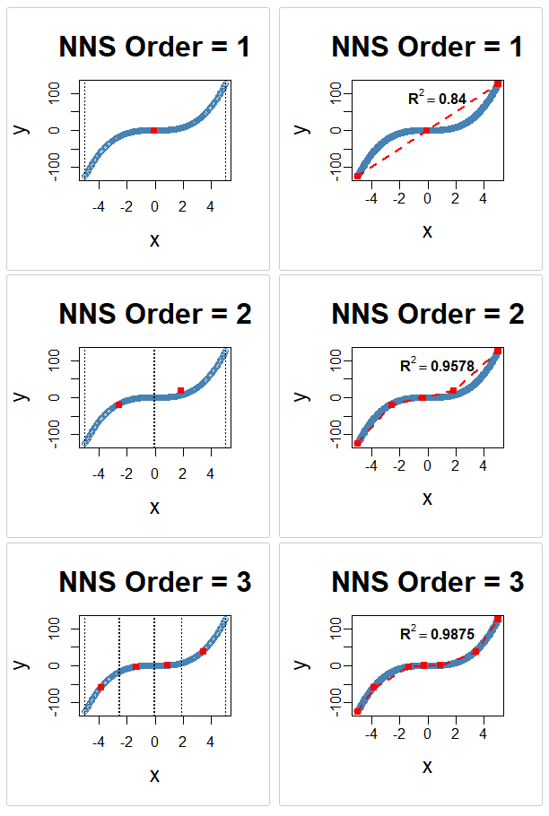

Chapter 21 Nonparametric Regression
Chapters 18 and 19 established the partition-based estimation framework that underlies the NNS approach to nonparametric regression. Chapter 18 introduced recursive mean-split estimation as a member of the well-characterized class of data-adaptive partition estimators and showed that consistency is inherited directly from that class under standard shrinking-diameter and occupancy conditions. Chapter 19 interpreted the induced partition diameter as a dynamic bandwidth, linking the estimator to classical nonparametric smoothing theory and showing that the consistency conditions are the direct analogue of shrinking-bandwidth conditions in kernel regression. Chapter 20 showed that the same recursive partitions can be used for unsupervised clustering.
This chapter brings those strands together under the familiar label of regression.
In classical statistics, regression is often identified with a fitted equation: a line, a polynomial, or another parametric surface chosen in advance. In the directional framework, regression is something more fundamental:
the estimation of conditional expectation from data without imposing a predetermined functional form.
The NNS approach treats regression as the recovery of a nonlinear surface by recursive local averaging over benchmark-defined regions. The univariate case and the multivariate case, however, operate through meaningfully different prediction mechanisms:
- In the univariate case, the estimator is a piecewise-constant conditional expectation surface, with optional piecewise-linear interpolation across regression points.
- In the multivariate case, the estimator operates as a nearest-neighbor search over a compressed set of regression points — local conditional means derived from per-regressor partitions against the response — rather than over the raw observations themselves.
This distinction is not incidental. The multivariate architecture is designed specifically to mitigate the curse of dimensionality. It is the central contribution of the NNS regression framework for high-dimensional settings, and it is developed carefully below.
21.1 Regression as Conditional Expectation
Let \(X \in \mathbb{R}^d\) denote a predictor vector and let \(Y \in \mathbb{R}\) denote a response variable.
The central object of regression is the conditional mean function
\[f(x) = E[Y \mid X = x].\]
This function gives the expected value of the response at each predictor location.
Classical regression estimates \(f\) by restricting it to a family such as
\[f(x) = \beta_0 + \beta^\top x\]
or
\[f(x) = \beta_0 + \beta_1 x + \beta_2 x^2 + \cdots.\]
Such models can be useful when the functional form is approximately correct. But when the underlying relationship is nonlinear, threshold-driven, piecewise, or asymmetric, a parametric family can distort the structure it aims to estimate.
Nonparametric regression removes this restriction. Rather than specifying the shape of \(f\) in advance, it estimates the function directly from the data.
The directional framework does this by recursively partitioning the data into regions and estimating the local conditional mean inside each region.
21.2 Why Classical Regression Can Fail
The limitations of classical regression mirror the limitations discussed throughout the book.
21.2.1 Functional rigidity
A linear model assumes that the response changes at a constant rate in each direction of predictor space. Many relationships do not.
21.2.2 Global averaging
A single fitted equation averages across the full sample. Local nonlinear structure may be flattened into a misleading global trend.
21.3 Partition-Based Regression in the NNS Framework
The NNS regression framework begins with the recursive mean-split estimator introduced in Chapter 18.
Suppose we observe
\[(X_1,Y_1), \dots, (X_n,Y_n).\]
A partition of the predictor space produces regions
\[A_1, A_2, \dots, A_K.\]
Within each region, the regression function is estimated by the local sample average:
\[\hat f(x) = \frac{1}{N(x)} \sum_{i : X_i \in A(x)} Y_i,\]
where \(A(x)\) is the region containing \(x\) and \(N(x)\) is the number of observations in that region.
This is the basic NNS regression rule:
estimate the conditional expectation by averaging responses inside a data-adaptive local region.
The distinctive feature is not the averaging formula itself. Partition estimators are classical, and their consistency is well-established. The distinctive features are the geometry of the partition — generated recursively from local means, following the directional structure of the data — and the multivariate architecture built on per-regressor partitioning against the response, which is the source of the method’s ability to handle many predictors without exponential deterioration.
21.4 From Conditional Means to Regression Points
The recursive partition yields a collection of local mean points, called regression points.
In the univariate case, these are pairs
\[(\bar X_R, \bar Y_R)\]
for each region \(R\), where
\[\bar X_R = \frac{1}{|I_R|}\sum_{i \in I_R} X_i, \qquad \bar Y_R = \frac{1}{|I_R|}\sum_{i \in I_R} Y_i.\]
In higher dimensions, \(\bar X_R\) becomes a local mean vector in predictor space.
These regression points play a different role in the univariate and multivariate cases, and it is important to keep that distinction clear.
21.5 The Univariate Case: Piecewise Estimation
In the univariate case, the regression points can be interpreted in two complementary ways.
21.5.1 Piecewise-constant surface
Within each terminal cell, the estimate is constant:
\[\hat f(x) = \bar Y_R \qquad \text{for } x \in R.\]
This yields a stepwise approximation to the conditional mean surface.
21.5.2 Piecewise-linear surface
If neighboring regression points are connected by line segments, the result is a continuous piecewise-linear surface. This gives the NNS univariate regression estimator two useful faces:
- a local averaging estimator for theory,
- a piecewise-linear interpolating surface for visualization and prediction.
Both arise from the same partition geometry. The piecewise-linear representation provides a transparent interpolation and extrapolation rule: between any two adjacent regression points, the surface varies linearly, while the regression points themselves remain anchored to empirical local conditional means.
x <- seq(-5, 5, .05)
y <- x ^ 3
for(i in 1 : 3){NNS.part(x, y, order = i, obs.req = 0, Voronoi = TRUE, type = "XONLY")
NNS.reg(x, y, order = i, ncores = 1)}
NNS.reg univariate fit on \(y = x^3\) at orders 1–3, alongside the corresponding NNS.part X-only partitions. Each panel shows the piecewise-linear regression surface formed by connecting regression points, with progressively finer partition cells at higher order.21.6 Piecewise Estimation from Partition Clusters
Chapter 20 showed that recursive mean-split partitioning can be interpreted as clustering. The same result has a direct regression interpretation.
Each terminal partition cell can be viewed as a local cluster of observations sharing similar benchmark-relative structure. Once that structure is identified, regression proceeds by fitting the conditional mean locally inside each cluster.
This interpretation clarifies why the method is effective on nonlinear data.
A single global line may fit badly because observations that belong to fundamentally different local regimes are forced into one equation. Partition-based regression instead allows the data to decompose into structurally coherent regions before averaging.
In this sense, NNS univariate regression is piecewise conditional expectation estimation from partition clusters, with linear interpolation between the resulting regression points.
The procedure is:
- recursively partition the sample into locally coherent regions,
- compute the local regression point within each region,
- connect adjacent regression points with line segments to form a continuous interpolating surface.
Thus clustering and regression are not separate operations. In the NNS framework, they are two views of the same recursive structure.
21.7 Interpretation of the Estimated Model
One advantage of the NNS regression framework is that the fitted model remains interpretable.
Classical black-box machine-learning methods can predict well while making it difficult to understand what the model has learned. Recursive mean-split regression retains a geometric interpretation at every stage.
21.7.1 Local benchmark interpretation
Each split occurs at a local mean. The partition tree records how the data separate relative to conditional benchmarks.
21.7.2 Regional interpretation
Each terminal cell corresponds to a region where the conditional expectation is approximately stable.
21.7.3 Surface interpretation
The fitted surface can be read as an assembly of local conditional expectations stitched together over the predictor space.
21.7.4 Complexity interpretation
Model complexity is controlled by partition order and occupancy thresholds rather than by a fixed polynomial degree or a hidden parameterization.
This makes the estimator interpretable in a way that is both statistical and geometric:
- where the surface bends, the partition refines,
- where the surface is flat, the partition stays coarse,
- where the data are sparse, the smoothing remains broader,
- where the data are dense, the surface can localize more aggressively.
21.8 Bias, Variance, and Adaptive Smoothing
Chapters 18 and 19 already established the asymptotic logic of the estimator. In regression language, the same result can be restated simply.
At any point \(x\), the estimator averages the responses within a cell \(A_n(x)\). Two conditions determine its quality:
- the cell must be small enough that \(f\) is nearly constant inside it,
- the cell must contain enough observations that the local average is stable.
These are the usual bias–variance requirements.
If the cell is too wide, the estimate is biased because it averages across substantively different predictor values. If the cell is too small too early, the estimate has high variance because the local sample is too thin.
The NNS partition addresses this through recursive refinement. Its effective bandwidth is the cell diameter
\[h_n(x) = \operatorname{diam}(A_n(x)).\]
This bandwidth is not chosen externally. It is induced by the recursive geometry of the data.
Thus nonparametric regression in the NNS framework may be interpreted as adaptive local averaging with endogenous bandwidth — and the convergence of this bandwidth to zero as \(n\) grows, combined with growing occupancy, is exactly the condition that delivers consistency by class membership.
21.9 Comparison with Classical Regression Models
The differences between NNS regression and classical models can now be stated directly.
21.9.1 Linear regression
Ordinary least squares assumes a single global hyperplane \(Y = \beta_0 + \beta^\top X + \varepsilon\). This is efficient when the relationship is approximately linear, but restrictive when it is not. NNS regression imposes no global linearity and allows the shape to vary across regions.
21.9.2 Polynomial regression
Polynomial models allow curvature, but only of a prespecified algebraic form. High-order polynomials can oscillate and extrapolate poorly. NNS regression does not require choosing a polynomial degree; curvature emerges from recursive local refinement.
21.9.3 Generalized additive models
Additive models allow nonlinear marginal effects but often assume additive separability across predictors. NNS regression does not require additive separability; interactions can appear naturally through the partition geometry.
21.9.4 CART and regression trees
Tree methods also partition the predictor space and are the closest classical analogue. Both NNS and CART belong to the data-adaptive partition estimator class and share the same class-level consistency guarantees. But CART chooses splits greedily to optimize impurity or squared error reduction and then relies on pruning penalties. NNS regression anchors partitions to local mean structure itself; its geometry follows recursive benchmark-relative splitting rather than a greedy impurity search.
21.9.5 Kernel regression
Kernel estimators average nearby observations using weights determined by a bandwidth \(h\). They are classical and flexible but require explicit bandwidth selection, and their local neighborhoods are imposed by a weighting rule rather than generated by recursive structure. NNS regression avoids explicit bandwidth tuning and obtains localization through partition diameter instead. Both approaches are consistent local averagers; they differ in how the neighborhood is defined and whether the smoothing scale is chosen by the analyst or induced by the data.
21.9.6 k-nearest-neighbor regression
Standard kNN regression predicts by averaging the \(k\) observed responses whose predictor values lie closest to the query point. It searches over the raw observation cloud of size \(n\). The multivariate NNS regression is superficially similar but mechanistically different: it searches over a compressed set of regression points — local conditional means derived from per-regressor partitions — rather than over raw observations. The search space is smaller, and each candidate neighbor has already been denoised through local averaging. This distinction is the foundation of the NNS multivariate architecture and is developed in full in the following section.
21.10 Exact Fit, Interpolation, and Extrapolation
An important feature of recursive mean-split regression is its finite limit behavior.
At a sufficiently high partition order \(O^*\), each observation occupies its own terminal region. At that point,
\[\hat f(X_i) = Y_i \qquad \text{for all } i.\]
This identifies the finite interpolation limit of the estimator, but it is also a warning sign: in practice, the preferred partition order is chosen before this limit, typically by cross-validation or dependence-driven order selection, in order to balance local fidelity against overfitting.
The estimator spans a full spectrum:
- coarse global approximation at low order,
- increasingly local nonlinear fit at intermediate order,
- exact in-sample interpolation at finite maximal order.
In the univariate case, prediction may be based either on the piecewise-constant local mean within a terminal cell, or on the piecewise-linear interpolation across adjacent regression points. In the multivariate case, neither of these descriptions applies — prediction proceeds instead by nearest-neighbor lookup over the regression-point matrix, as described in the following section.
21.11 Multivariate Regression: Per-Regressor Partitioning and the Curse of Dimensionality
The multivariate case requires a separate treatment, and its architecture is the primary contribution of NNS regression for high-dimensional settings.
The fundamental challenge in multivariate nonparametric regression is the curse of dimensionality: as the number of predictors \(d\) grows, the volume of predictor space grows exponentially, and observations spread thinly across it. Local averaging methods that partition the joint predictor space suffer because the number of cells grows as \(K^d\) for \(K\) partition points per dimension, while the number of observations per cell decreases at a corresponding rate. For standard kNN regression, the relevant neighbors become increasingly distant as \(d\) grows.
The NNS multivariate architecture addresses this challenge through a structural decision at the partitioning stage, not through dimensionality reduction after the fact.
21.11.1 Per-regressor partitioning against the response
Each predictor \(X^{(j)}\) is partitioned independently against the response \(Y\) using the univariate recursive mean-split procedure. This produces a set of \(K_j\) regression points for predictor \(j\) — local conditional means of the pairs \((X^{(j)}, Y)\) within the partition cells of that regressor.
This is the key architectural decision. Rather than partitioning the joint \(d\)-dimensional predictor space — which would produce up to \(K^d\) cells — NNS partitions each predictor dimension separately against the response. The number of regression points generated is \(\sum_{j=1}^d K_j\), which grows linearly in \(d\) rather than exponentially.
The benefit is twofold. First, the search space for prediction is compressed: the candidate set has size of order \(\sum_j K_j\), not \(\prod_j K_j\). Second, each candidate in the search space is not a raw observation but a local conditional mean — an average over a cluster of observations that share similar benchmark-relative structure with respect to the response. Noise has already been reduced before the distance calculation is performed.
21.11.2 Why this mitigates the curse
The curse of dimensionality in standard kNN is a consequence of searching over \(n\) raw observations in \(\mathbb{R}^d\): the volume of the space containing any fixed proportion of the observations grows as \(n^{-1/d}\), making nearest neighbors increasingly distant and the local average increasingly biased.
In the NNS multivariate framework:
The search space is compressed. The regression point matrix (RPM) has \(M \ll n\) rows, one per occupied joint cell. Each row is a local conditional mean, not a raw observation.
Each candidate neighbor is denoised. Because each regression point averages over a cluster of observations, the effective noise level of each candidate is reduced relative to a raw observation. The nearest-neighbor distance calculation is performed over a geometry that is already smoother than the raw data.
The partition depth per regressor is signal-adaptive. When
order = NULL, each regressor receives a partition depth proportional to its directional dependence with the response (measured byNNS.dep). Regressors with weak predictive content receive shallow partitions and contribute few regression points. Regressors with strong predictive content receive deeper partitions. The search space is therefore automatically concentrated on the dimensions most relevant to prediction.
Together, these three properties mean that the effective dimensionality of the prediction problem is reduced not by collapsing predictors into a lower-dimensional index, but by compressing and denoising the candidate set before the nearest-neighbor search.
21.11.3 Regression point matrix
The per-regressor regression points are assembled into a regression point matrix (RPM). Each row of the RPM corresponds to one occupied joint cell in the multivariate partition structure; the columns record the local mean of each predictor within that cell, and a final column records the corresponding local mean response.
For a new observation \(x^* \in \mathbb{R}^d\), prediction proceeds by identifying the rows of the RPM whose predictor means lie closest to \(x^*\) and returning the weighted average of the corresponding local response means.
21.11.4 Dependence-sensitive neighbor count
The number of neighbors used in the final averaging step is itself dependence-sensitive. When estimated dependence between predictors and the response is high, the local regression surface is more coherent and fewer neighbors suffice for a stable prediction. When dependence is lower, broader averaging over more neighbors improves stability.
Localization is therefore adjusted not only by partition geometry, but also by the estimated strength of the multivariate signal. The multivariate NNS regression is thus a response-anchored regression-point nearest-neighbor estimator: partitioning creates a denoised, compressed geometry of local conditional means, and nearest-neighbor search over that geometry — with dependence-adaptive neighbor count — supplies the final prediction.
21.11.5 Structural comparison with standard kNN
The difference from standard kNN can be stated precisely:
| Property | Standard kNN | Multivariate NNS |
|---|---|---|
| Search space | \(n\) raw observations | \(M \ll n\) regression points |
| Candidate quality | Individual observations, full noise | Local conditional means, partially denoised |
| Search space growth in \(d\) | Fixed at \(n\); neighbor distance grows | \(\sum_j K_j\), linear in \(d\) |
| Neighbor count | Fixed \(k\) | Dependence-adaptive |
| Partition basis | None | Per-regressor against response |
The NNS approach is therefore not simply kNN with a different distance metric. It is kNN over a fundamentally different, response-anchored candidate set.
21.12 Adaptive Order Selection: Dependence-Driven Partition Depth
When the user leaves order = NULL (the default), NNS.reg does not apply one global partition depth uniformly across all predictors. Instead, it computes a directional dependence score between each regressor and the response using NNS.dep-style dependence, then allocates recursion depth per regressor accordingly.
Regressors with stronger directional dependence receive deeper recursive partitioning, enabling finer local approximation where signal is most evident. Regressors with weak dependence receive shallower partitioning, yielding broader smoothing and reducing the chance of overfitting noise-dominant inputs.
This is the concrete implementation of the dynamic-bandwidth interpretation from Chapter 19: partition cell diameter is not only data-adaptive but dependence-adaptive. Smoothing granularity is endogenously assigned by signal strength rather than fixed through a single hand-tuned global parameter.
fit <- NNS.reg(x, y) # order = NULL by default
fit$rhs.partitions # realized partition depth per regressorThe realized depth profile is relative: predictors with higher directional dependence typically receive finer partitioning than predictors with weaker dependence in the same fit. The exact realized depths depend on the sample, occupancy constraints, and other fitting controls.
The main practical consequence is that per-variable manual tuning is often unnecessary in exploratory workflows, while full control remains available when needed (order = 5, order = "max", and related settings).
21.13 Dimension Reduction via Synthetic Predictors
The package also provides a qualitatively different way to address multivariate regression when dimensionality becomes burdensome. Rather than preserving the full joint predictor geometry, the predictors may be collapsed into a single synthetic index and standard univariate NNS regression applied to that index.
Let the predictors be \(X^{(1)},\dots,X^{(d)}\). After rescaling each predictor to the unit interval, write the normalized predictors as \(\tilde X^{(1)},\dots,\tilde X^{(d)} \in [0,1]\). The synthetic predictor is
\[X^* = \frac{\sum_{j=1}^{d} w_j \tilde X^{(j)}}{\sum_{j=1}^{d} \mathbf{1}[w_j\neq 0]},\]
where \(w_j\) is the weight assigned to predictor \(j\).
This replaces a \(d\)-dimensional predictor vector with a single composite variable, allowing the full univariate recursive mean-split machinery — including piecewise-linear interpolation — to be reused directly.
21.13.1 Weighting options
The weights \(w_j\) may be determined in several ways:
- Equal weighting assigns all included predictors the same weight.
- Correlation weighting (
dim.red.method = "cor") uses signed correlation coefficients. - Directional dependence weighting uses
NNS.dep, connecting the reduction step to the nonlinear dependence framework developed in Chapter 10. - Directional causation weighting uses
NNS.caus, allowing predictors with stronger causal evidence to receive greater weight. - Ensemble weighting combines multiple weighting schemes into a single composite score.
Dimension reduction is therefore not a purely geometric projection. It is a structure-aware aggregation of predictors, where the weights themselves may be derived from directional measures developed earlier in the book.
21.13.2 Variable selection through thresholding
The threshold parameter excludes predictors whose weights fall below a chosen value \(\tau\):
\[w_j < \tau \implies \text{predictor } j \text{ excluded from } X^*.\]
This turns the reduction step into a form of variable selection as well as aggregation.
21.13.3 Regression after reduction
Once \(X^*\) is formed, the regression problem becomes univariate:
\[f^*(x^*) = E[Y \mid X^* = x^*].\]
Standard univariate NNS regression is then applied to \((X^*, Y)\), producing the familiar recursive partition, regression points, piecewise-linear interpolation path, and local conditional means.
The multivariate reduction pipeline is therefore:
- rescale each predictor,
- compute directional or correlation-based weights,
- threshold weak predictors if desired,
- form the synthetic predictor \(X^*\),
- run univariate NNS regression on \(X^*\) against \(Y\).
21.13.4 Conceptual comparison of the two multivariate paths
The dimension-reduction path and the regression-point nearest-neighbor path address dimensionality through different strategies.
The regression-point nearest-neighbor path preserves the joint predictor structure. It mitigates dimensionality by partitioning each regressor against the response independently, then searching over a compressed set of local conditional means — a search space that grows linearly rather than exponentially in \(d\) — with dependence-adaptive neighbor count. Prediction is a smooth weighted average over regression points. Piecewise-linear interpolation is not available on this path because there is no natural ordering of regression points in \(\mathbb{R}^d\).
The dimension-reduction path collapses the predictor space entirely, trading interaction structure for parsimony. Once the synthetic index is formed, univariate NNS regression applies — and its piecewise-linear interpolation is again available.
For some problems, especially when predictors are numerous and noisy, the synthetic-index approach can be an advantage rather than a liability. Simple weighted composites often generalize well out of sample, and the univariate path offers stability, interpretability, and straightforward visualization that the full multivariate path cannot match.
The two strategies are worth keeping distinct — in particular because the prediction mechanism differs between them.
21.14 Practical Perspective on NNS Regression
From a practical standpoint, the NNS regression framework can be summarized with five ideas.
21.14.1 It is nonparametric
No functional form is assumed for the regression surface. Consistency follows from class membership in the data-adaptive partition estimator class established by Stone (1977).
21.14.2 It is nonlinear
Curvature, thresholds, and interactions emerge naturally through local partition geometry.
21.14.3 It is adaptive
The effective smoothing scale varies by region rather than being imposed globally. In the multivariate case, it also varies by predictor, with finer partitioning allocated to regressors with stronger directional dependence on the response.
21.14.4 It is interpretable
The fitted model can be understood through local means, partition regions, and regression points.
21.14.5 Its prediction mechanism depends on dimensionality
In the univariate case, prediction uses piecewise-linear interpolation across ordered regression points. In the multivariate case, prediction uses nearest-neighbor search over the regression-point matrix — a fundamentally different mechanism operating over a compressed, denoised candidate set that grows linearly in the number of predictors, substantially mitigating the curse of dimensionality that affects standard kNN and joint-partition methods alike.
21.15 Relationship to the Broader NNS Program
This chapter completes an important conceptual arc.
Earlier chapters showed that directional deviation operators generate distribution functions, moment decompositions, dependence measures, conditional probabilities, and stochastic dominance diagnostics.
Chapters 18 and 19 then showed that the same directional logic induces a consistent adaptive estimator through recursive mean splitting — consistent by class membership, with the dynamic bandwidth interpretation making the connection to classical kernel theory explicit.
This chapter reframes that estimator in its most familiar applied form: nonparametric regression.
The deeper point is that regression itself can be understood as another consequence of the same benchmark-relative directional primitive that generated the earlier parts of the book. Distribution theory, dependence, clustering, and regression are not separate constructions here. They are structurally linked through recursive directional decomposition.
The multivariate architecture — per-regressor partitioning against the response, regression-point matrix construction, and dependence-adaptive nearest-neighbor prediction — is the practical expression of that linkage in high-dimensional settings. It is where the theoretical elegance of the partial-moment framework translates into a concrete answer to one of the hardest problems in nonparametric estimation.
21.16 Summary
This chapter developed nonparametric regression in the NNS framework as conditional expectation estimation by recursive partitioning.
Its main contributions are sevenfold.
First, it defined regression at its most fundamental level as estimation of the conditional mean function \(f(x) = E[Y \mid X = x]\), and located the NNS approach within the class of data-adaptive partition estimators whose consistency has been established by Stone (1977), Lugosi and Nobel (1996), and Györfi et al. (2002).
Second, it showed how recursive mean-split partitions produce nonlinear regression surfaces by forming local conditional averages over data-adaptive regions, with partition geometry following the benchmark-relative directional structure of the data.
Third, it interpreted those regions as partition clusters, so that regression becomes piecewise estimation from locally coherent structural groupings.
Fourth, it distinguished clearly between the univariate and multivariate prediction mechanisms. In the univariate case, regression points are connected by line segments to produce a piecewise-linear interpolating surface. In the multivariate case, this description does not apply: prediction is performed by nearest-neighbor search over the regression-point matrix — a compressed, denoised set of local conditional means — yielding a smooth weighted average rather than a linear interpolation.
Fifth, it explained why the multivariate architecture mitigates the curse of dimensionality. Per-regressor partitioning against the response produces a candidate search set that grows linearly in the number of predictors rather than exponentially, and each candidate is a denoised local conditional mean rather than a raw observation. This is not a post-hoc dimensionality reduction; it is a structural property of the partitioning design.
Sixth, it introduced dimension reduction via synthetic predictors as an alternative multivariate path. Predictors are rescaled, weighted by directional relevance, thresholded for variable selection, and collapsed into a single composite index \(X^*\), after which standard univariate NNS regression — including piecewise-linear interpolation — applies directly.
Seventh, it compared the NNS approach with classical regression models — linear, polynomial, additive, tree-based, kernel-based, and kNN — highlighting the distinctive combination of nonparametric flexibility, endogenous bandwidth, response-anchored regression-point nearest-neighbor prediction, dependence-adaptive localization, and optional synthetic-index reduction.
The next chapter turns from conditional mean estimation to classification, where the same directional partition structures are used not to predict a numeric response, but to assign observations to classes.
Further Reading / Examples
For hands-on regression applications, including multivariate and noisy data examples, see the NNS Regression Examples.
21.17 References
Stone, C. J. (1977). Consistent nonparametric regression. Annals of Statistics, 5(4), 595–620.
Lugosi, G., & Nobel, A. (1996). Consistency of data-driven histogram methods for density estimation and classification. Annals of Statistics, 24(2), 687–706.
Györfi, L., Kohler, M., Krzyżak, A., & Walk, H. (2002). A Distribution-Free Theory of Nonparametric Regression. Springer.
Vinod, H. D., & Viole, F. (2017). Nonparametric regression using clusters. Computational Economics, 52(4), 1181–1209. https://doi.org/10.1007/s10614-017-9713-5
Vinod, H. D., & Viole, F. (2018). Clustering and curve fitting by line segments. Preprints, 2018010090. https://doi.org/10.20944/preprints201801.0090.v1
Viole, F. (2020). Partitional estimation using partial moments. SSRN eLibrary. https://doi.org/10.2139/ssrn.3592491
Viole, F., & Nawrocki, D. (2013). Nonlinear Nonparametric Statistics: Using Partial Moments. CreateSpace.